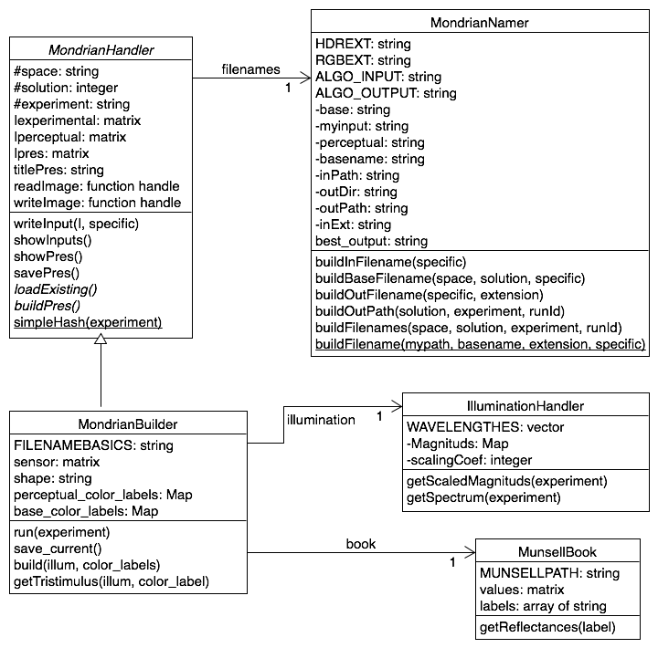

Part of an internship at the Image processing for enhanced cinematography research group.
Part of an internship at the Image processing for enhanced cinematography research group.
This README aims to explain how to use the code (Quickstart), then how it works.
Clone this remote and personalized_tools, that you may store in the same directory.
git clone git@github.com:tourfl/mondrian_factory.git
git clone git@github.com:tourfl/personalized_tools.git
Then you clone the HDR Toolbox, on your local Matlab folder (assuming this is ~/Documents/MATLAB/), with the following command:
git clone https://github.com/banterle/HDR_Toolbox.git ~/Documents/MATLAB/HDR_Toolbox
Next, you copy the startup.m file (:danger: it assumes you have put the two repositories in your Matlab folder) to your Matlab folder. It will automaticaly add the good folders to your Matlab path.
It is now installed! :camel:
All you need to modify is the main.m file. The parameters are the following:
The output images are stored at ../images/ (same level as mondrian_factory/).
For more theoretical explanations, see the experimental report. This is only about how the code is working.
Mainly refers to color space. For LMS, the cones fundamentals are used, and for RGB, an RGB color matching function. The data are from the Colour & Vision database from the University College of London. Concerning the HDR space this is the same color matching function but the images are saved as PFM images. This file format allow to work with images that are not rescaled. Yet, this is mainly used because an algorithm (private) requires PFM as input.
Currently there is only one shape available, this is the one from Land and McCann's experiment. You could build another shape (with the same number of areas), following the model of the existing one (data/shape/Landshape.mat, modify the italic part).
trying to emulate Land's illuminations, 5 attempts are available:
The output images would be stored in the images/ folder, at the same level as mondrian_factory/.
..
├── images
│ ├── HDR
│ │ ├── solution1
│ │ │ ├── blueexp_s1_HDR.pfm
│ │ │ ├── blueexp_s1_HDR_percepted.pfm
│ │ │ ├── grayexp_s1_HDR.pfm
│ │ │ ├── grayexp_s1_HDR_percepted.pfm
│ │ │ ├── greenexp_s1_HDR.pfm
│ │ │ ├── greenexp_s1_HDR_percepted.pfm
│ │ │ ├── redexp_s1_HDR.pfm
│ │ │ ├── redexp_s1_HDR_percepted.pfm
│ │ │ ├── yellowexp_s1_HDR.pfm
│ │ │ └── yellowexp_s1_HDR_percepted.pfm
│ │ ├── solution2
│ │ ├── ...
│ ├── LMS
│ └── RGB
├── mondrian_factory
└── personalized_tools
For each experiment (blue, red,...), there is a experimental and a perceptual version, according to McCann's paper. The two versions are built in the following way:
the color labels and illuminations, are from McCann's paper.
This is Matlab code in an object-oriented fashion. See the UML class diagram below.
